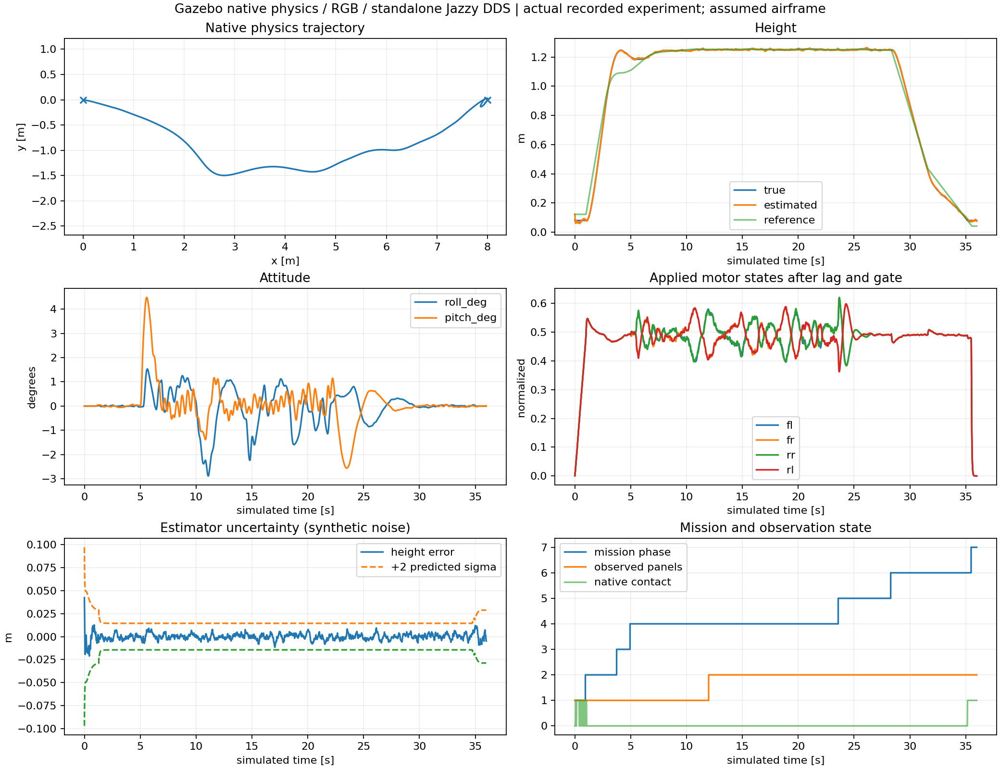
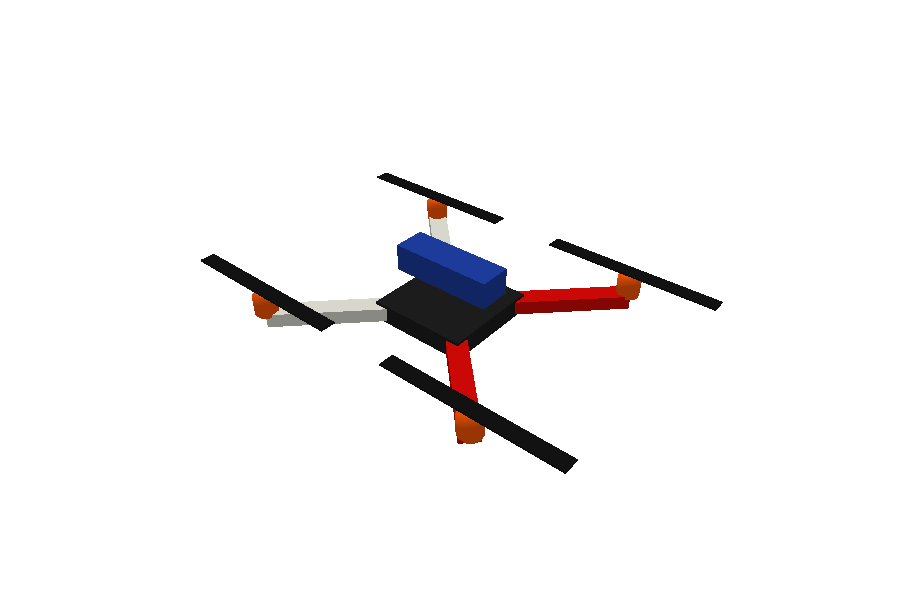

Executed on Windows 10 · 20 October 2026. Isaac Sim application removed.
35.998 simulated seconds · 2.12 cm landing error · 0.560 m evaluated minimum panel clearance · no collision.
Recorded simulation time, not a real-time desktop screen capture. Concurrent builds: 60.619 seconds wall time.
Raw summary · CSV · Actual DDS latency · Source/contact/video checks


Original approximate geometry, not a downloaded manufacturer CAD model. 9047 props, four orange motors, battery, two red/two white arms. All component masses provisional; estimated sum 740 g. The flight above uses the separate 1.2 kg baseline.
Independent URDF load/mass check · Model assumptions and F450 CAD references
powershell -ExecutionPolicy Bypass -File tools/run_native_garden.ps1
Double-click tools/view_f450_windows.cmd for RViz.
Setup, repairs and reproducible commands · Pi/Jetson deployment plan
Known-size panel course, simulated local pose, analytical downward ray. C++ ROS wrappers were tested separately from the flight. Physical motor arming remains disabled. Real companion/camera/UART integration is pending.